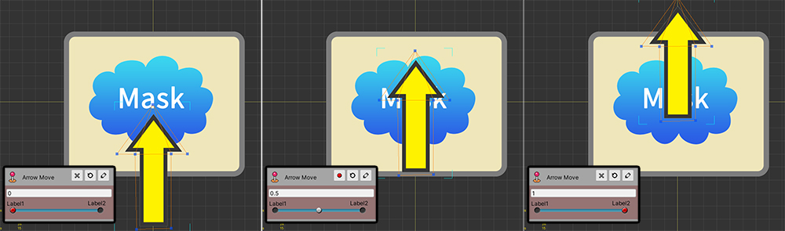
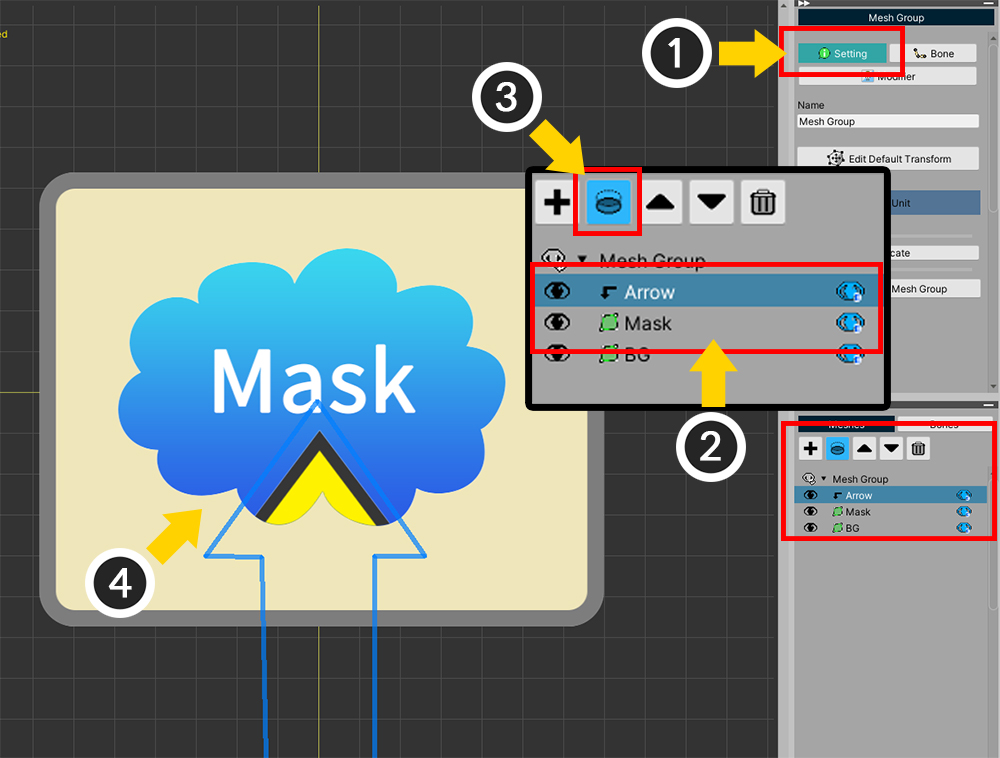
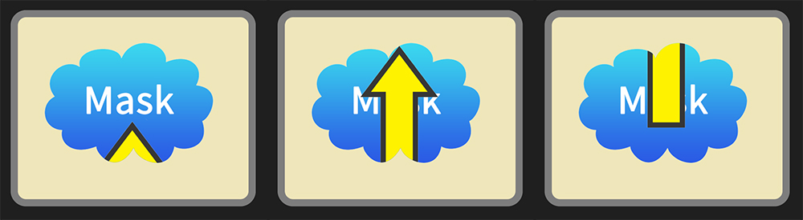
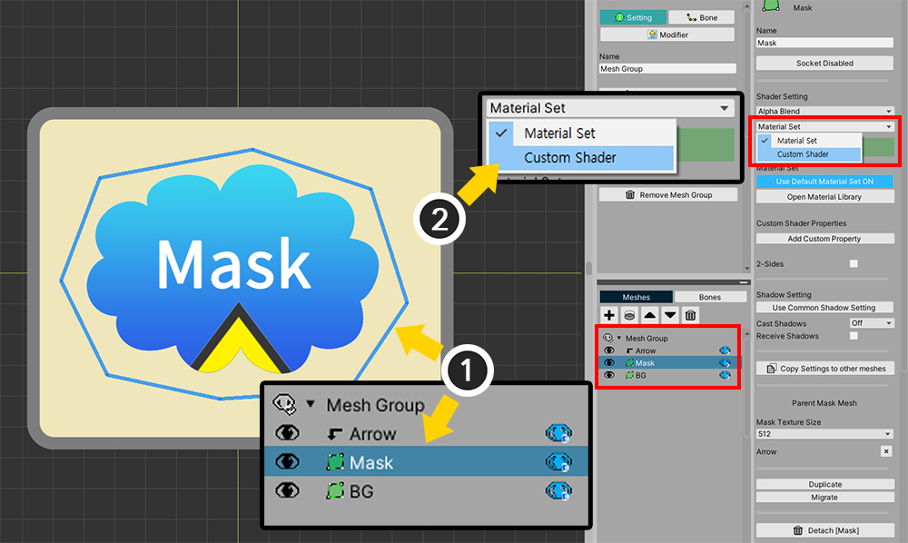
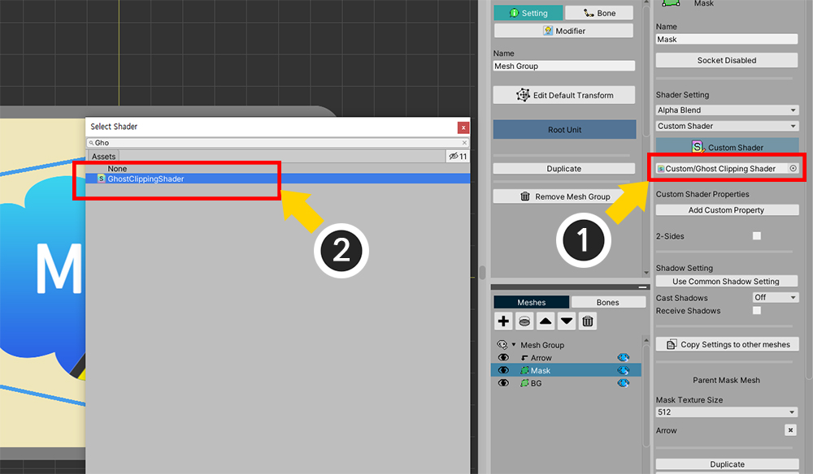
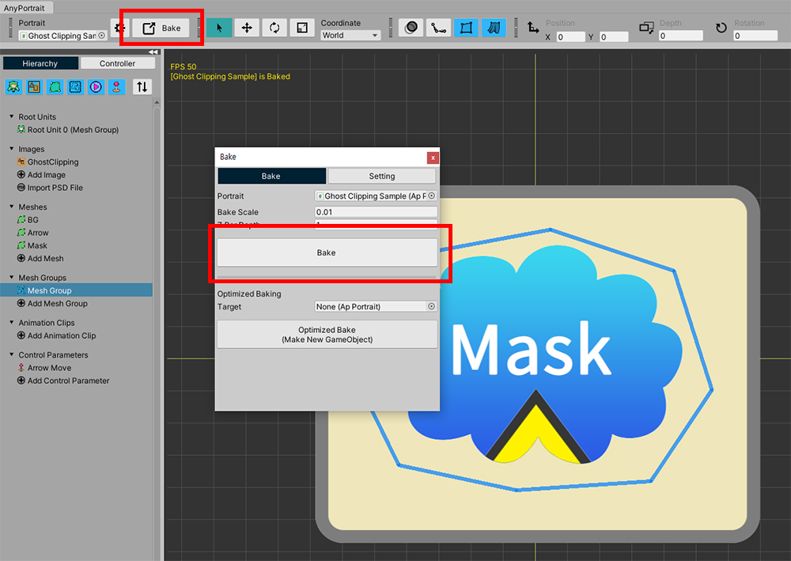
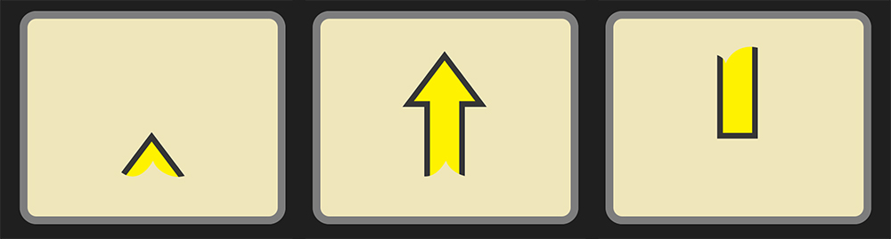
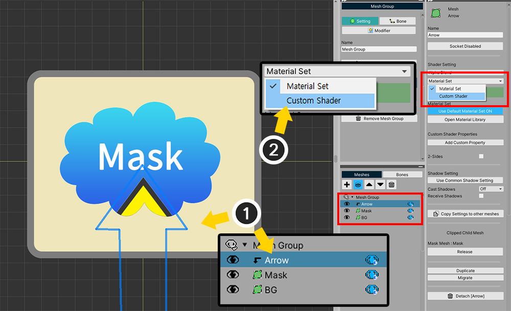
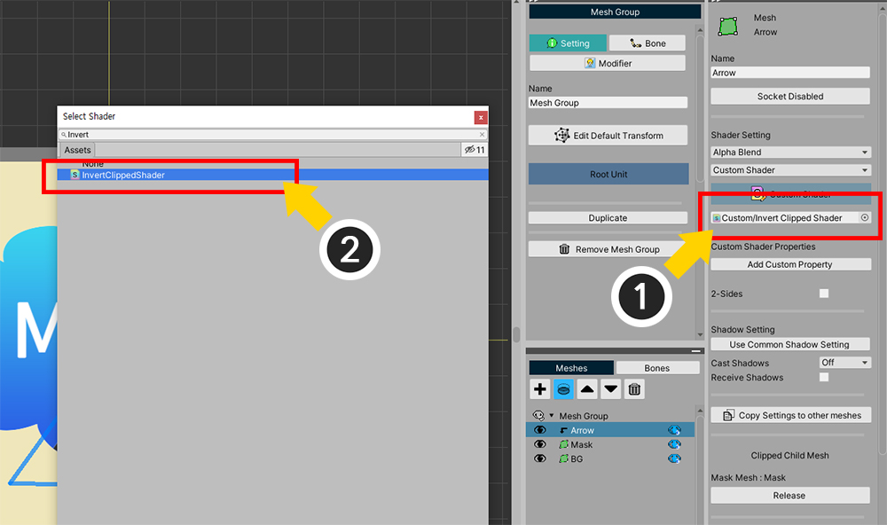

AnyPortrait > 메뉴얼 > 커스텀 클리핑 마스크
커스텀 클리핑 마스크
클리핑 마스크(Clipping Mask)를 이용하면 메시의 일부분만 렌더링되도록 만들 수 있습니다.
이 기능은 유용하지만, 다른 방식으로 활용할 필요가 있을 수 있습니다.
클리핑 마스크를 처리하는 쉐이더를 직접 작성하여 기존과 다르게 마스킹을 하도록 만드는 과정을 이 페이지에서 다룹니다.
클리핑 마스크 및 커스텀 쉐이더와 관련된 설명을 미리 읽어보시는 것을 권장합니다.
- 클리핑 마스크에 관한 설명
- 메시의 쉐이더 변경하는 방법
- 커스텀 쉐이더를 작성하는 방법
투명한 마스크 만들기
클리핑 마스크의 특징은 마스크가 렌더링 되면서 클리핑 처리가 수행된다는 것입니다.
기존 방식과는 다르게 마스크 메시가 렌더링되지 않은 상태로 클리핑이 처리되도록 만들어봅시다.

설명을 위해서 위와 같은 샘플을 만들어보았습니다.
컨트롤 파라미터에 따라서 "화살표 메시"가 위로 이동합니다.
이 샘플에는 "화살표 메시(Arrow)", "마스크 메시(Mask)", 그리고 "배경 메시(BG)"가 존재합니다.

클리핑 마스크를 설정해봅시다.
(1) 메시 그룹을 선택한 상태에서 Setting 탭을 선택하세요.
(2) 화살표 메시(Arrow)를 선택합니다.
(3) 클리핑 버튼을 누르면 (4) 마스크 메시(Mask)를 기준으로 클리핑이 되어 렌더링되는 것을 볼 수 있습니다.

Bake를 하고 게임을 실행해보면, 위와 같이 화살표가 마스크 메시의 내부에서 움직이는 것처럼 보입니다.
여기까지는 클리핑 메시의 기본적인 사용법입니다.
이제 커스텀 쉐이더를 작성해서 마스크 메시가 숨겨진 상태로 화살표가 렌더링되도록 만들어봅시다.
새로운 쉐이더 에셋을 생성하고, 아래와 같이 코드를 작성합니다.
만약 쉐이더 그래프 (Shader Graph)를 이용한다면, 아래의 설명을 보시고 동일하게 동작하도록 그래프를 작성하면 됩니다.
커스텀 쉐이더 코드 작성 방식은 관련 페이지에서 보실 수 있습니다.
Shader "Custom/Ghost Clipping Shader"
{
Properties
{
_Color("2X Color (RGBA Mul)", Color) = (0.5, 0.5, 0.5, 1.0)
_MainTex("Main Texture (RGBA)", 2D) = "white" {}
}
SubShader
{
Tags{ "RenderType" = "Transparent" "Queue" = "Transparent" "PreviewType" = "Plane" }
Blend SrcAlpha OneMinusSrcAlpha
LOD 200
CGPROGRAM
#pragma surface surf SimpleColor alpha
#pragma target 3.0
half4 LightingSimpleColor(SurfaceOutput s, half3 lightDir, half atten)
{
half4 c;
c.rgb = s.Albedo;
c.a = s.Alpha;
return c;
}
half4 _Color;
sampler2D _MainTex;
struct Input
{
float2 uv_MainTex;
float4 color : COLOR;
};
void surf(Input IN, inout SurfaceOutput o)
{
o.Alpha = 0;
o.Albedo = half3(0, 0, 0);
}
ENDCG
}
}
쉐이더 코드를 보시면 기본적인 Alpha Blend 방식의 쉐이더와 거의 같습니다.
다만, surf 함수 내의 코드가 변경되었습니다.
코드에서 볼 수 있듯이, Alpha의 값을 0으로 설정했기 때문에 이 쉐이더는 아무것도 렌더링하지 않습니다.
(쉐이더의 이름은 자유롭게 정하시면 됩니다.)
이제 이 쉐이더를 적용해봅시다.

메시 그룹의 Setting 탭을 선택한 상태에서,
(1) 마스크 메시(Mask)를 선택합니다.
(2) 쉐이더 설정을 Material Set에서 Custom Shader로 변경합니다.

(1) 커스텀 쉐이더 에셋 항목에 (2) 위에서 작성한 쉐이더 에셋을 할당합니다.

커스텀 쉐이더는 AnyPortrait 에디터에서는 적용되지 않습니다.
유니티 씬에서 보기 위해, Bake를 실행합니다.

게임을 실행하면 위와 같이 "마스크 메시"는 보이지 않은 상태로 "화살표 메시"만 마스크의 영향을 받아서 렌더링되는 것을 볼 수 있습니다.
마스크 영역 반전하기
현재 "화살표 메시"는 마스크의 영역 안쪽에서만 렌더링됩니다.
커스텀 쉐이더를 이용하면, 마스크의 영역 밖에서만 렌더링되도록 만들 수 있습니다.
새로운 쉐이더 에셋을 생성하고 아래와 같이 작성해봅시다.
클리핑 쉐이더 작성 요령은 관련 페이지에서 보실 수 있습니다.
Shader "Custom/Invert Clipped Shader"
{
Properties
{
_Color("2X Color (RGBA Mul)", Color) = (0.5, 0.5, 0.5, 1.0)
_MainTex("Base Texture (RGBA)", 2D) = "white" {}
_MaskTex("Mask Texture (A)", 2D) = "white" {}
_MaskScreenSpaceOffset("Mask Screen Space Offset (XY_Scale)", Vector) = (0, 0, 0, 1)
}
SubShader
{
Tags{ "RenderType" = "Transparent" "Queue" = "Transparent" "PreviewType" = "Plane"}
Blend SrcAlpha OneMinusSrcAlpha
LOD 200
CGPROGRAM
#pragma surface surf SimpleColor alpha
#pragma target 3.0
half4 LightingSimpleColor(SurfaceOutput s, half3 lightDir, half atten)
{
half4 c;
c.rgb = s.Albedo;
c.a = s.Alpha;
return c;
}
half4 _Color;
sampler2D _MainTex;
sampler2D _MaskTex;
float4 _MaskScreenSpaceOffset;
struct Input
{
float2 uv_MainTex;
float4 screenPos;
float4 color : COLOR;
};
void surf(Input IN, inout SurfaceOutput o)
{
half4 c = tex2D(_MainTex, IN.uv_MainTex);
c.rgb *= _Color.rgb * 2.0f;
float2 screenUV = IN.screenPos.xy / max(IN.screenPos.w, 0.0001f);
screenUV -= float2(0.5f, 0.5f);
screenUV.x *= _MaskScreenSpaceOffset.z;
screenUV.y *= _MaskScreenSpaceOffset.w;
screenUV.x += _MaskScreenSpaceOffset.x * _MaskScreenSpaceOffset.z;
screenUV.y += _MaskScreenSpaceOffset.y * _MaskScreenSpaceOffset.w;
screenUV += float2(0.5f, 0.5f);
float mask = tex2D(_MaskTex, screenUV).r;
mask = 1 - mask;
c.a *= mask;
o.Alpha = c.a * _Color.a;
o.Albedo = c.rgb;
}
ENDCG
}
}
위 코드도 기본적인 Alpha Blend 방식의 "클리핑 쉐이더 코드"와 거의 유사하며, 다음의 단 한줄만 더 추가되었습니다.
mask = 1 - mask;
이 코드는 마스킹되는 변수의 값을 반전하는 역할을 합니다.
마스크 값은 0~1의 범위를 가지므로 위와 같이 작성하면 렌더링 되는 영역이 반전됩니다.
이제 이 커스텀 쉐이더 에셋을 적용해봅시다.

위에서는 마스크 메시에 커스텀 쉐이더를 적용했다면, 이번엔 클리핑되는 "화살표 메시(Arrow)"에 적용을 합니다.
(1) 화살표 메시(Arrow)를 선택합니다.
(2) 메시의 쉐이더 속성을 Material Set에서 Custom Shader로 변경합니다.

(1) 커스텀 쉐이더 에셋 항목에 (2) 위에서 작성한 클리핑 쉐이더 에셋을 할당합니다.

이제 Bake를 하고 게임을 실행해서 렌더링 결과를 봅시다.
이전 렌더링 결과와 다르게, 화살표 메시가 마스크 영역의 밖에서만 렌더링되는 것을 볼 수 있습니다.
커스텀 쉐이더를 이용하면 이 페이지에서 보여드린 예제처럼, 또다른 다양한 연출이 가능합니다.
이를 활용하여 멋진 캐릭터 애니메이션을 만들어보세요!